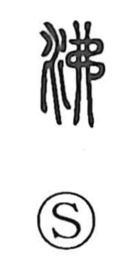

沸

Uncategorized
Kun: waku, wakasu, wakitatsu | On: futsu
to boil ・ to bubble up ・ to be excited
Explanation
A phono-semantic character with the water element on the left and 弗 as the phonetic. Shirakawa describes 弗 as a rope twisted lengthwise around several pieces of wood, evoking crooked, unbindable wood that scatters and resists constraint—an image of things refusing to stay together. In 沸 this phonetic supplies both sound and the sense of bursting apart; combined with water, it depicts liquid heated until it breaks into motion, boiling and bubbling up. Thus compounds like 沸騰 name the boiling of water and other liquids, and the character also extends to figurative uses for states that grow hot, bubble up, or fall into an uproar.